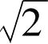

可能除了牛顿（Newton，I.）之外，欧几里得（Euclid）（约公元前325—前265）是最有名的数学家．直到20世纪，他的唯一幸存的著作《原本》（Elements）一直是第二大畅销图书，仅次于《圣经》（Bible）．欧几里得无疑是他那个时代有名的数学编辑家，正像19世纪伟大的辞典编辑家韦伯斯特（Noah Webster），美国最大的辞典是以他的名字命名的．
关于欧几里得人们知道得很少，只知道他在亚历山大（Alexandria）的一个学院里教书，亚历山大是亚历山大大帝（Alexander the Great）建立在埃及尼罗河口岸的一座希腊城市．由于他的工作是一个编辑家，欧几里得熟悉在他之前的全部希腊数学，特别地，他熟悉第一次数学危机：无理数的危机．
毕达哥拉斯（Pythagoras，卒于大约公元前475年）是早期希腊数学研究者中的一个神秘人物．如果说我们关于欧几里得知道得很少，那么我们关于毕达哥拉斯知道得就更少．然而，我们确实知道毕达哥拉斯学派的一些事情．毕达哥拉斯学派认为整个宇宙可以用整数1，2，3等来描述．正如亚里士多德所说：“毕达哥拉斯学派认为事物是数，而且整个宇宙是一个比例和一个数．”勾股定理（表述在这一章）说明了这个论断．小小的整数，像3，4，5，不仅能描述一个直角三角形的边长，而且具有下述性质：建立在两个较小边上的正方形的面积之和等于建立在最长边（斜边，即直角所对的边）上的正方形的面积．注意，古希腊人陈述勾股定理用的是几何术语而不是数！
后来有一个人提出了一个有趣的问题，如果有一个边长是一个单位长的正方形，以及其面积是这个正方形面积2倍的另一个正方形，那么另一个正方形的边与这个正方形的边的比是多少？这正是2的平方根问题的原始提法．
古埃及人发现了其答案的一个很好的近似，另一个正方形的边与这个正方形的边的比几乎就是7比5．这当然不会使我们吃惊，由于我们知道7/5也可以表示为1.4，它很接近我们知道的

的小数表示．但是接近不能使毕达哥拉斯学派满意，毕竟勾股定理不能断定正方形的面积是接近相等的，它断言的是它们相等．后来一个人（我们不知道他的名字）提出了一个深刻的见解，假定2的平方根可以表示为两个整数的比，并且这两个整数没有除了单位1之外的公因子，称这两个整数为p和q，建立在边长为p的正方形P的面积正好是建立在边长为q的正方形Q的面积的2倍．现在如果P是Q的2倍，那么P一定是一个偶数！毕达哥拉斯学派已经知道如果一个正方形的面积是偶数，那么这个面积必然是4的倍数，因而这个正方形的边长必然是一个偶数．
再者，任何人都知道，如果有一个正方形，就能找到另一个其面积是这个正方形面积1/4的正方形：只要在长为已给正方形边长一半的边上建立一个正方形即可．此时，做一个正方形T，它的边长t是p的一半，因为p的长是偶数，所以t的长必然是一个整数，由于正方形T的面积是P的面积的1/4，故正方形Q的面积是正方形T的面积的2倍．于是，正方形Q的面积是偶数，正像正方形P一样，正方形Q的面积也是4的倍数．因而，边q的长度应当是一个偶数．此时，这个数学推理像打网球一样——球在两个运动员之间来来回回运动．
终于这个推理达到它的高峰，开始假定这两条边没有1之外的公因子，终于产生一个矛盾：它们有公因子2！毕达哥拉斯学派找不出这个推理的任何毛病．事实上，没有人能找到一个方法把2的平方根表示为两个整数之比，毕达哥拉斯学派面临这样一个现实，已经证明2的平方根不能表示为两个整数之比．
于是无理数就诞生了，它作为数学对象至少有2000年不能用整数来表示，这是克罗内克（Kronecker）所说的最早的人为的工作．
毕达哥拉斯学派谨慎地保守这个重大发现，由于它制造了一个危机，这个危机影响到他们的宇宙观的根源．当毕达哥拉斯学派知道他们的一个成员把这个秘密泄露给他们圈子之外的某个人时，他们很快作出决定把泄密者开除并且把他扔进深海之中，这个人是第一个为了数学而死的殉道者！
无理数的危机也教育了古希腊人，他们不能企望用算术来构成其余数学的基础，也不能用它来解释宇宙的构造，他们必须寻找另外的办法，他们转向了几何．
欧几里得的《原本》是最应当提及的几何著作，特别地，应当提及他对平行线的处理，平行线的定义是：
平行直线是这样一些直线，他们在同一平面内，并且在两个方向上无限延长时，在每个方向上都不相交．
而在第五公设中，平行公设是：
如果一条直线与两条直线相交，并且在同一侧的内角和小于两个直角，那么，如果无限延长这两条直线，则这两条直线必然在这一侧相交，并且其交角小于两个直角．
这与通常的表述很不相同，通常的表述是：
给出一条直线及不在这条线上的一个点，至多可以画一条直线通过已知点并且平行于这条直线．
这是一个等价但不同的形式，是由苏格兰数学家普莱费尔（Playfair，J.）于1795年给出的．
在牛顿时代的高潮期间，哲学家，譬如康德（Kant，I.）从来也没有怀疑过欧几里得平行公设的真实性．人们只是质疑其真实性的性质．平行公设在宇宙中是必然地真还是偶然地真？当然，自从爱因斯坦的革命以后，我们知道平行公设在宇宙中完全不是真的．我们居住的爱因斯坦的时空宇宙是弯曲的，欧几里得几何以及牛顿的物理只是它的近似．
于是，我们要问希腊人到底如何想象平行公设的性质？我相信在考查了古希腊人关于世界的概念之后，我们就会作出这样的解释，他们也是把平行公设看作一个有用的东西，而不是看作物理世界的真实描述．古希腊人相信我们居住在科学史家考瑞（Koyre，A.）所说的一个“封闭的世界（closed world）”里，这是一个球形的宇宙，在它之中实际上没有延伸到无穷的直线．在月球轨道之下，沿直线运动的物体或者朝向地心或者远离它而去．在月球轨道的上方，物体的轨道是以地球中心为中心的圆，在这个宇宙中，实际上完全没有任何直线．
但是，希腊人有一个问题，他们需要找到他们的数学的基础，毕达哥拉斯学派已经把算术作为基础并且出现了一次危机，为了找到另外一个基础，继承泰勒斯（Thales，卒于大约公元前547年）的另一个学派认为数学的基础是几何，这个学派发现没有平行公设他们能得到的很少！例如，他们不能证明勾股定理，事实上，他们不能证明许多几何命题，这对2500年后的我们现代人来说不会感到惊奇，因为我们受惠于2500年之后的认识并且知道了勾股定理在非欧几何中不成立．我相信古希腊人知道平行公设只是一个有用的近似，不，让我来说，一个非常有用的近似．
如果说平方根无理性的证明给予我们第一次数学危机，那么它也给予我们归谬法（reductio ad absurdum）推理的第一个例子．这种推理形式的第二个例子可以在欧几里得证明素数无限多的证明中看到，另外的证明当然源自另一个人．
一个素数是一个正整数，例如3或23，它的正整数因子只有1和它本身．证明素数有无限多个是意想不到的简单．假定存在一个最大的素数P，把所有的素数P，包括P乘起来，再加上1，其结果既不能被P整除，也不能被任何一个小于P的素数整除，由于P和所有小于它的素数显然能整除加1之前的乘积，于是，存在最大素数的假定导致矛盾．这就是归谬法！
希腊人注意到许多素数是成对出现的，例如11和13，17和19，29和31，这些素数称为孪生素数．希腊人猜测不只有无限多个素数，而且也应当有无限多个孪生素数．但是他们不能证明这个，直到现在也没有一个数学家能证明这个．
同样地，没有一个数学家能否证存在奇完全数．完全数，听起来确实奇怪！什么是完全数？一个完全数是这样一个数，它的大于等于1的但小于它本身的整数因子之和等于它．这样的因子称为它的真因数．古希腊人发现的全部偶完全数如下：
注意：2的幂，从1，即20，到2n-1的和等于2n-1，对于n=3，1+2+4=7=8-1．现在，我们做一个简单的算术：
7=1+2+4=20+21+22
7=8-1=23-20
14=16-2=24-21
逐列相加，得到28．
28=1+2+4+7+14=22+23+24=22（20+21+22）=22（23-1），28是它的所有真因子的和．注意这些因子，前面都是2的幂，一直到某一个指数，而后是下一个2的幂减去1，这个因子称为转向点因子，再后是转向点因子乘2的所有幂，直到某一个指数．再注意，如果7不是素数，那么28就不等于它的所有真因子的和．如果转向点因子有一个素数因子，那么，所有真因子的和就会超出，利用上述观察，希腊人证明了：
如果（2n-1）是一个素数，那么2n-1（2n-1）是一个完全数，并且偶完全数必然有这种形式．
2000多年后，仍然没有人发现奇完全数、没有一个数学家相信奇完全数的存在，但是没有人能够证明奇完全数不存在！
毕达哥拉斯学派试图并且失败于以算术为全部数学的基础．把数学的基础建立在几何上意味着算术的基础是几何．
快！7/5与10/7哪一个比较大？这个对你来说可能是太容易了．不要计算，试比较19/12与30/19哪一个比较大？试着只用乘法而不用除法来做一下．在欧几里得的《原本》第V卷中的欧多克索斯比例论提供了只用乘法就得到答案的方法．
遵照欧多克索斯（Eudoxus卒于约公元前355年），欧几里得提出如下问题：考虑4个长度——a，b，c和d，如何决定a比b是大于，小于，或等于c比d？欧多克索斯开始于断言：“称两个量彼此有一个比，当倍数其中任一个可以超过另一个时．”他认识到，如果a比b大于c比d？那么，a比b的倍数大于c比d的相同的倍数．知道了这个事实，欧多克索斯就知道整个事情就是要找到一个有用的倍数来解决这个问题，他选定的倍数是b和d的乘积，a比b乘以b和d的乘积给出了a，b和d的乘积比b，即边为a和d的矩形的面积．类似地，c比d乘以b和d的乘积给出了c，b和d的乘积比d，即边为c和b的矩形的面积．
于是，边a和d的矩形的面积大于边为c和b的矩形的面积当且仅当a比b大于c比d．因而，毕达哥拉斯学派试图把几何算术化失败了，而欧多克索斯试图把算术几何化却成功了！顺便指出，因为19×19大于30×12，所以19/12大于30/19！
欧几里得是最伟大的数学百科全书式的数学家．现在，不同领域的数学家难以懂得不同领域前沿的工作，没有一个数学家能够编辑所有已知数学的概要．但是，在数学界保留了这样一个理想，在20世纪后半叶，法国数学界的布尔巴基（Bourbaki，N.）走出了模仿欧几里得的一步．布尔巴基不是一个人，他是法国20多个各领域数学家集体的笔名！直到现在欧几里得的书仍然是数学教科书的典范．